Piezas de carrocería para Toyota Hilux
83 piezas disponibles hoy para Toyota Hilux, cada una con su foto y su código: parrillas (18), faros y lámparas delanteras (9), estribos y rolling boards (5), capós (5). Dinos el año de tu carro y te confirmamos si le sirve.
- Garantía de 3 días
- Foto real de cada pieza
- Efectivo, Yappy o ACH
- Lunes a sábado, 8:00 a. m. a 5:00 p. m.
Parrillas para Toyota Hilux 18
543Hilux2012-15 · original 546Hilux2009-11 · original547Hilux2009-11 · original
546Hilux2009-11 · original547Hilux2009-11 · original 549Hilux2012-15 · genérico
549Hilux2012-15 · genérico 550Hilux2012-15 · genérico
550Hilux2012-15 · genérico 564Hilux2012-15 · original566Hilux2012-15 · genérico nuevo
564Hilux2012-15 · original566Hilux2012-15 · genérico nuevo 567Hilux2016-2021 · original nuevo
567Hilux2016-2021 · original nuevo 569Hilux2012-15 · original
569Hilux2012-15 · original 570Hilux2012-15 · original
570Hilux2012-15 · original 583Hilux2016-20 · original
583Hilux2016-20 · original 584Hilux2012-15 · genérico nuevo
584Hilux2012-15 · genérico nuevo 586Hilux Vigo2012-15
586Hilux Vigo2012-15 609Hilux SW42016-17
609Hilux SW42016-17 647Hilux2012-15 · original
647Hilux2012-15 · original P010Hilux2016-23 · original
P010Hilux2016-23 · original P043Hilux2016-24 · original
P043Hilux2016-24 · original
546Hilux2009-11 · original547Hilux2009-11 · original549Hilux2012-15 · genérico550Hilux2012-15 · genérico564Hilux2012-15 · original566Hilux2012-15 · genérico nuevo567Hilux2016-2021 · original nuevo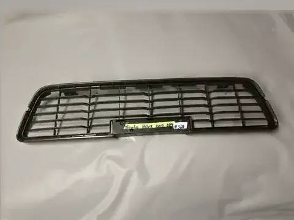
568Hilux2012-15 · original569Hilux2012-15 · original570Hilux2012-15 · original583Hilux2016-20 · original584Hilux2012-15 · genérico nuevo586Hilux Vigo2012-15609Hilux SW42016-17647Hilux2012-15 · originalP010Hilux2016-23 · originalP043Hilux2016-24 · originalFaros y lámparas delanteras para Toyota Hilux 9
 123Hilux Revo2021-26 · lado derecho · original
123Hilux Revo2021-26 · lado derecho · original 134Hilux2008-11 · lado derecho · genérico
134Hilux2008-11 · lado derecho · genérico 148Hilux Vigo2016-17 · lado izquierdo · original
148Hilux Vigo2016-17 · lado izquierdo · original 154Hilux (led)2021-26 · lado izquierdo · original
154Hilux (led)2021-26 · lado izquierdo · original 157Hilux Vigo2005-08 · lado derecho · genérico
157Hilux Vigo2005-08 · lado derecho · genérico 161Hilux Vigo2009-11 · lado izquierdo · original
161Hilux Vigo2009-11 · lado izquierdo · original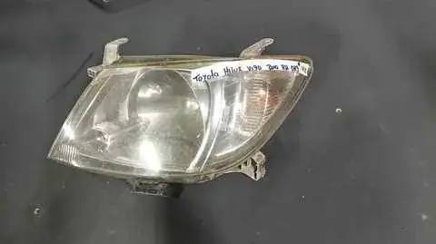
162Hilux Vigo2009-11 · lado derecho · original 164Hilux Revo2018-20 · lado izquierdo · original
164Hilux Revo2018-20 · lado izquierdo · original LD020Hilux Revo2016-20 · lado izquierdo · original
LD020Hilux Revo2016-20 · lado izquierdo · originalEstribos y rolling boards para Toyota Hilux 5
 RB026Hilux2016-2021 · lado derecho · original
RB026Hilux2016-2021 · lado derecho · original RB027Hilux2016-2021 · lado derecho
RB027Hilux2016-2021 · lado derecho RB028Hilux2016-2021 · lado izquierdo · original
RB028Hilux2016-2021 · lado izquierdo · original RB029Hilux2012-15
RB029Hilux2012-15 RB034Hilux Sencillo (una Cabina)2016-25 · lado izquierdo
RB034Hilux Sencillo (una Cabina)2016-25 · lado izquierdoCapós para Toyota Hilux 5
 TM011Hilux2005-11 · original
TM011Hilux2005-11 · original TM031Hilux Revo2016-24 · genérico
TM031Hilux Revo2016-24 · genérico TM042Hilux2009-11 · genérico
TM042Hilux2009-11 · genérico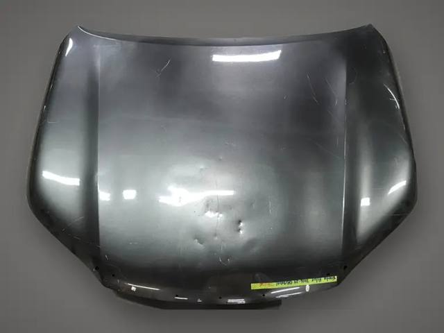
TM056Hilux2016-24 · original TM061Hilux2020-23 · original
TM061Hilux2020-23 · originalDefensas delanteras para Toyota Hilux 4
 727Hilux Revo2016-20 · original nuevo
727Hilux Revo2016-20 · original nuevo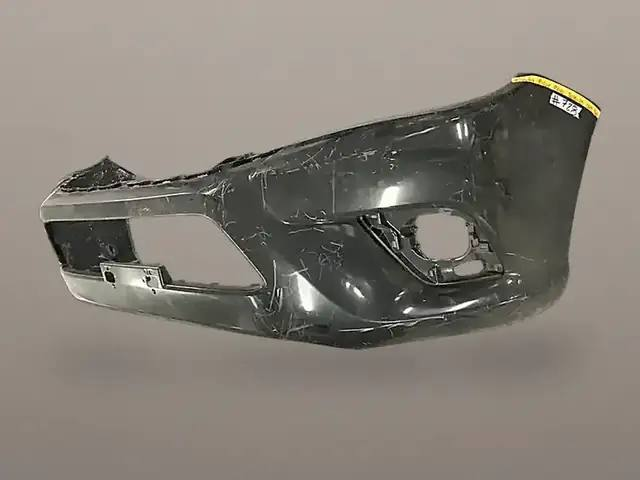
728Hilux Revo2016-20 · original 729Hilux Revo2016-20 · original
729Hilux Revo2016-20 · original 755Hilux2009-11 · original
755Hilux2009-11 · originalHalógenas y faros antiniebla para Toyota Hilux 4
 HA043Hilux / Fortuner2005-11 · lado izquierdo · original
HA043Hilux / Fortuner2005-11 · lado izquierdo · original HA087Hilux2016-19 · lado derecho
HA087Hilux2016-19 · lado derecho HA088Hilux2016-19 · lado izquierdo
HA088Hilux2016-19 · lado izquierdo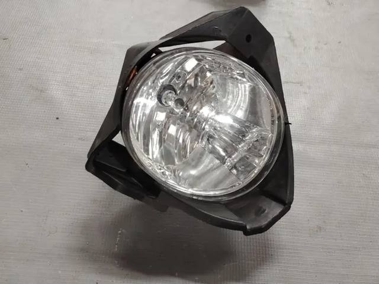
HA098Hilux Vigo2006-11 · lado izquierdoRefuerzos delanteros para Toyota Hilux 4
 R057Hilux Revo / Fortuner2015-22 · original
R057Hilux Revo / Fortuner2015-22 · original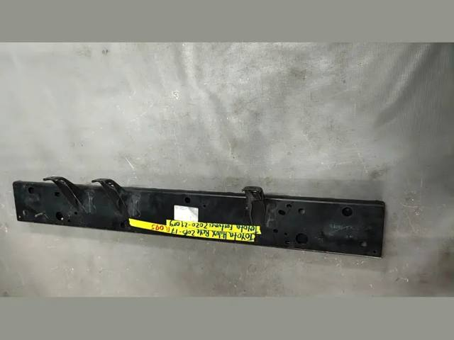
R098Hilux Revo / Fortuner2015-21 · original R099Hilux Revo / Fortuner2015-21 · original
R099Hilux Revo / Fortuner2015-21 · original R104Hilux / Fortuner2016-22 · original
R104Hilux / Fortuner2016-22 · originalDepósitos de agua para Toyota Hilux 4
 DA062Hilux2005-15 · original
DA062Hilux2005-15 · original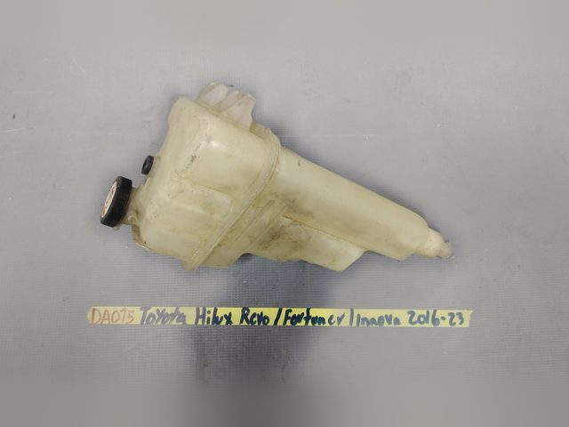
DA015Hilux Revo / Fortuner / Innova2016-23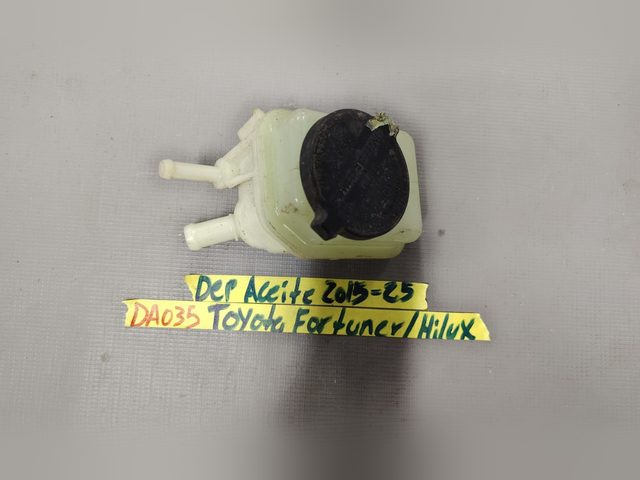
DA035Fortuner / Hilux2015-25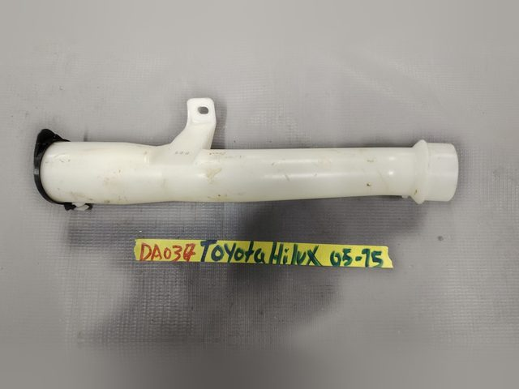
DA037Hilux2005-15Lámparas traseras para Toyota Hilux 3
 220Hilux2009-11 · lado izquierdo · original
220Hilux2009-11 · lado izquierdo · original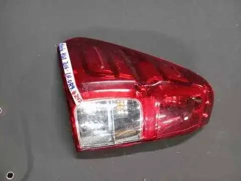
242Hilux2016-17 · lado izquierdo · original LT013Hilux Revo2016-21 · lado derecho · genérico
LT013Hilux Revo2016-21 · lado derecho · genéricoFlares para Toyota Hilux 3
 FL047Hilux Vigo2012-15 · lado izquierdo · original
FL047Hilux Vigo2012-15 · lado izquierdo · original FL136Hilux2005-11 · lado izquierdo · genérico
FL136Hilux2005-11 · lado izquierdo · genérico FL140Hilux2005-11 · lado derecho · genérico
FL140Hilux2005-11 · lado derecho · genéricoCubrepolvos para Toyota Hilux 3
CP009Hilux2016-26 · lado izquierdo · original CP084Hilux2015-2020 · genérico
CP084Hilux2015-2020 · genérico CP074Hilux2016-26 · lado izquierdo · genérico
CP074Hilux2016-26 · lado izquierdo · genérico
CP084Hilux2015-2020 · genéricoCP074Hilux2016-26 · lado izquierdo · genéricoGuardafangos para Toyota Hilux 3
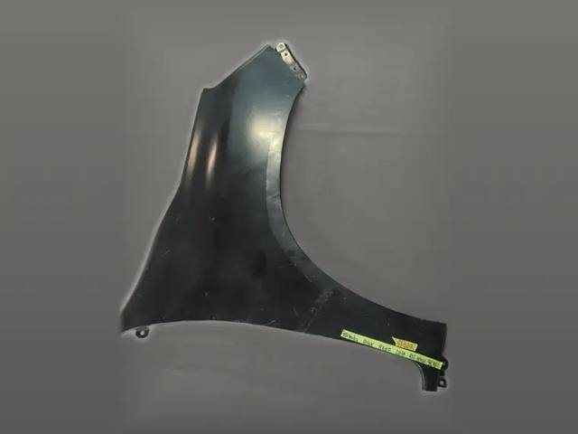
GF029Hilux Revo2016-17 · lado derecho · genérico nuevo GF033Hilux2005-08 · lado izquierdo · genérico
GF033Hilux2005-08 · lado izquierdo · genérico GF140Hilux2016-2025 · lado izquierdo · original
GF140Hilux2016-2025 · lado izquierdo · originalMarcos de radiador para Toyota Hilux 3
 MR028Hilux
MR028Hilux MR029Hilux Vigo
MR029Hilux Vigo MR062Hilux
MR062HiluxRetrovisores para Toyota Hilux 2
 RV026Hilux / Innova
RV026Hilux / InnovaCovers de halógena para Toyota Hilux 2
 CH128Hilux2015-20 · lado izquierdo · original
CH128Hilux2015-20 · lado izquierdo · original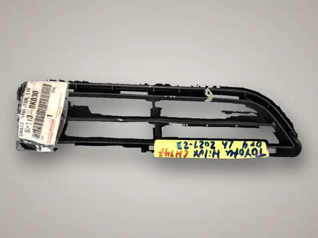
CH147Hilux2021-26 · lado izquierdo · original nuevo TA008Hilux
TA008Hilux TA050Hilux / Fortuner SW4
TA050Hilux / Fortuner SW4 MLD006Hilux Revo
MLD006Hilux Revo MLT004Hilux
MLT004Hilux PT028Hilux Vigo
PT028Hilux Vigo DDI012Fortuner / Hilux
DDI012Fortuner / Hilux SINCODIGO1Hilux
SINCODIGO1Hilux